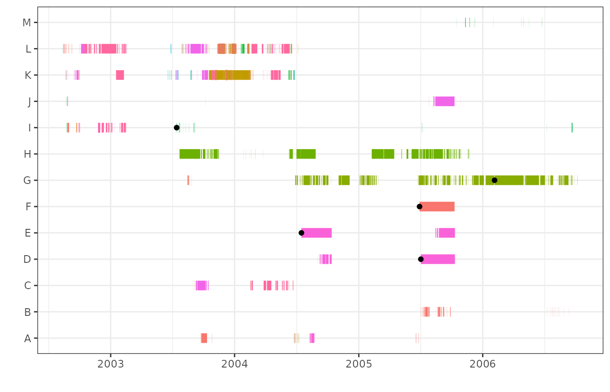

Plotting your data is invaluable in exploring and understanding your
data. The mortsplot() function plots your data using
ggplot2, as well as some automatically calculated presets
that should generate useful and functional plots for most datasets. All
the plots in the vignettes were generated using
mortsplot(). ggplot2 is suggested by mort, but
is not required for installation. To use mortsplot(), it is
the responsibility of the user to install and load
ggplot2.
Basic plotting of residence events
A basic plot can be quickly generated using a dataframe with residence events, and the same arguments that are used in other morts functions:
plot<-mortsplot(data=events,type="mort",ID="ID",station="Station.Name")
plotCustomizing
Because mortsplot() calls ggplot(), the
plot can be customized by adding additional arguments as you would with
any other ggplot2 object. For example, you can remove the
legend by calling:
plot<-plot+
theme(legend.position="none")
plotInteractive plots
Interactive plots can be generated easily with the
interactive argument in mortsplot():
plot<-mortsplot(data=events,type="mort",ID="ID",station="Station.Name",interactive=TRUE)
plotZooming and scrolling around the interactive plot are possible (using the toolbar at the top right corner), as well as changing the visibility of stations (by clicking on the station names). Information about each residence event appears when the cursor is moved over the beginning or end of a residence event.

When interactive=TRUE, mortsplot() calls
ggplotly() from plotly. The same result can be
achieved by building a non-interactive plot with
mortsplot() and calling ggplotly()
directly:
interactive_plot<-ggplotly(plot)
interactive_plotOptions
There are several options to customize mortsplot()
plots:
Add flagged mortalities
After potential mortalities have been identified, they can be added
to the plot as black points with the morts argument:
plot<-mortsplot(data=events,type="mort",ID="ID",station="Station.Name",morts=morts)
Seasonality
To plot specific seasons or periods of interest, seasonality can be
applied using the arguments season.start and
season.end. These arguments are used in the same way as for
season() (see the Seasonality
vignette) or when seasonality is applied in morts() (see
the Identifying
potential mortalities vignette).
To apply seasonality, the arguments residences and
units must also be provided, in the same manner as they are
in other morts functions.
plot<-mortsplot(data=events,type="mort",ID="ID",station="Station.Name",
residences="auto",units="auto",
season.start="2004-06-01",season.end="2004-10-31")Facetting
Depending on the duration of your dataset, the number of animals, and
if seasonality is applied, it may be desirable to facet the plot by year
or season. This is done by including the argument
facet=TRUE, along with the arguments for seasonality (see
above). The plot will automatically facet along the x axis, with each
specified season forming a panel.
plot<-mortsplot(data=events,type="mort",ID="ID",station="Station.Name",facet=TRUE,
season.start=c("2004-06-01","2004-10-01"),
season.end=c("2004-06-30","2004-10-31"))For multi-year datasets, it is also possible to facet by year instead of user-defined seasons.
plot<-mortsplot(data=events,type="mort",ID="ID",station="Station.Name",
facet=TRUE,facet.by="year")The default is to position panels along the x axis. The facet axis
can be changed using the facet.axis argument. Note that the
y-axis can only be used if facetting by year.
plot<-mortsplot(data=events,type="mort",ID="ID",station="Station.Name",
facet=TRUE,facet.by="year",facet.axis="y")Exclude single detections
In mortsplot(), the argument singles
specifies if single detections are plotted. The default setting is
singles=TRUE, to include single detections. If single
detections are included, they would normally not be visible in the plot
because their duration is 0. mortsplot() performs a simple
calculation to determine a dummy duration to assign to single
detections. The dummy duration depends on the scale of the plot, and is
long enough to be visible but short enough that it should not interfere
with the visibility of other residence events.
Source code
You may have tried the mortsplot() function, adding
additional arguments as above, and the options above, and you find that
mortsplot() still does not provide practical plots for your
dataset. If this is the case and you want to use some aspects of the
plot, please access the source code at github.com/rosieluain/mort or
entering the following into the console:
View(mortsplot)